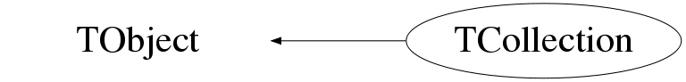

class TCollection: public TObject
TCollection Collection abstract base class. This class inherits from TObject because we want to be able to have collections of collections.
Function Members (Methods)
This is an abstract class, constructors will not be documented.
Look at the header to check for available constructors.
public:
| virtual | ~TCollection() |
| void | TObject::AbstractMethod(const char* method) const |
| virtual void | Add(TObject* obj) |
| virtual void | AddAll(const TCollection* col) |
| void | AddVector(TObject* obj1) |
| virtual void | TObject::AppendPad(Option_t* option = "") |
| Bool_t | AssertClass(TClass* cl) const |
| TIter | begin() const |
| virtual void | Browse(TBrowser* b) |
| Int_t | Capacity() const |
| ULong_t | TObject::CheckedHash() |
| static TClass* | Class() |
| virtual const char* | TObject::ClassName() const |
| virtual void | Clear(Option_t* option = "") |
| virtual TObject* | Clone(const char* newname = "") const |
| virtual Int_t | Compare(const TObject* obj) const |
| Bool_t | Contains(const char* name) const |
| Bool_t | Contains(const TObject* obj) const |
| virtual void | TObject::Copy(TObject& object) const |
| virtual void | Delete(Option_t* option = "") |
| virtual Int_t | TObject::DistancetoPrimitive(Int_t px, Int_t py) |
| virtual void | Draw(Option_t* option = "") |
| virtual void | TObject::DrawClass() constMENU |
| virtual TObject* | TObject::DrawClone(Option_t* option = "") constMENU |
| virtual void | Dump() const |
| static void | EmptyGarbageCollection() |
| TIter | end() const |
| virtual void | TObject::Error(const char* method, const char* msgfmt) const |
| virtual void | TObject::Execute(const char* method, const char* params, Int_t* error = 0) |
| virtual void | TObject::Execute(TMethod* method, TObjArray* params, Int_t* error = 0) |
| virtual void | TObject::ExecuteEvent(Int_t event, Int_t px, Int_t py) |
| virtual void | TObject::Fatal(const char* method, const char* msgfmt) const |
| virtual TObject* | FindObject(const char* name) const |
| virtual TObject* | FindObject(const TObject* obj) const |
| static void | GarbageCollect(TObject* obj) |
| static TCollection* | GetCurrentCollection() |
| virtual Option_t* | TObject::GetDrawOption() const |
| static Long_t | TObject::GetDtorOnly() |
| virtual Int_t | GetEntries() const |
| virtual const char* | TObject::GetIconName() const |
| virtual const char* | GetName() const |
| virtual char* | TObject::GetObjectInfo(Int_t px, Int_t py) const |
| virtual TObject** | GetObjectRef(const TObject* obj) const |
| static Bool_t | TObject::GetObjectStat() |
| virtual Option_t* | TObject::GetOption() const |
| virtual Int_t | GetSize() const |
| virtual const char* | TObject::GetTitle() const |
| virtual UInt_t | TObject::GetUniqueID() const |
| virtual Int_t | GrowBy(Int_t delta) const |
| virtual Bool_t | TObject::HandleTimer(TTimer* timer) |
| virtual ULong_t | Hash() const |
| Bool_t | TObject::HasInconsistentHash() const |
| virtual void | TObject::Info(const char* method, const char* msgfmt) const |
| virtual Bool_t | TObject::InheritsFrom(const char* classname) const |
| virtual Bool_t | TObject::InheritsFrom(const TClass* cl) const |
| virtual void | TObject::Inspect() constMENU |
| void | TObject::InvertBit(UInt_t f) |
| virtual TClass* | IsA() const |
| Bool_t | IsArgNull(const char* where, const TObject* obj) const |
| virtual Bool_t | IsEmpty() const |
| virtual Bool_t | TObject::IsEqual(const TObject* obj) const |
| virtual Bool_t | IsFolder() const |
| Bool_t | TObject::IsOnHeap() const |
| Bool_t | IsOwner() const |
| virtual Bool_t | IsSortable() const |
| Bool_t | IsUsingRWLock() const |
| Bool_t | TObject::IsZombie() const |
| virtual void | ls(Option_t* option = "") const |
| virtual TIterator* | MakeIterator(Bool_t dir = kIterForward) const |
| virtual TIterator* | MakeReverseIterator() const |
| void | TObject::MayNotUse(const char* method) const |
| virtual Bool_t | Notify() |
| void | TObject::Obsolete(const char* method, const char* asOfVers, const char* removedFromVers) const |
| void | TObject::operator delete(void* ptr) |
| void | TObject::operator delete(void* ptr, void* vp) |
| void | TObject::operator delete[](void* ptr) |
| void | TObject::operator delete[](void* ptr, void* vp) |
| void* | TObject::operator new(size_t sz) |
| void* | TObject::operator new(size_t sz, void* vp) |
| void* | TObject::operator new[](size_t sz) |
| void* | TObject::operator new[](size_t sz, void* vp) |
| TObject* | operator()(const char* name) const |
| virtual void | Paint(Option_t* option = "") |
| virtual void | TObject::Pop() |
| virtual void | Print(Option_t* option = "") const |
| virtual void | Print(Option_t* option, Int_t recurse) const |
| virtual void | Print(Option_t* option, const char* wildcard, Int_t recurse = 1) const |
| virtual void | Print(Option_t* option, TPRegexp& regexp, Int_t recurse = 1) const |
| virtual Int_t | TObject::Read(const char* name) |
| virtual void | RecursiveRemove(TObject* obj) |
| virtual TObject* | Remove(TObject* obj) |
| void | RemoveAll() |
| virtual void | RemoveAll(TCollection* col) |
| void | TObject::ResetBit(UInt_t f) |
| virtual void | TObject::SaveAs(const char* filename = "", Option_t* option = "") constMENU |
| virtual void | TObject::SavePrimitive(ostream& out, Option_t* option = "") |
| void | TObject::SetBit(UInt_t f) |
| void | TObject::SetBit(UInt_t f, Bool_t set) |
| void | SetCurrentCollection() |
| virtual void | TObject::SetDrawOption(Option_t* option = "")MENU |
| static void | TObject::SetDtorOnly(void* obj) |
| void | SetName(const char* name) |
| static void | TObject::SetObjectStat(Bool_t stat) |
| virtual void | SetOwner(Bool_t enable = kTRUE) |
| virtual void | TObject::SetUniqueID(UInt_t uid) |
| virtual void | ShowMembers(TMemberInspector& insp) const |
| static void | StartGarbageCollection() |
| virtual void | Streamer(TBuffer&) |
| void | StreamerNVirtual(TBuffer& ClassDef_StreamerNVirtual_b) |
| virtual void | TObject::SysError(const char* method, const char* msgfmt) const |
| Bool_t | TObject::TestBit(UInt_t f) const |
| Int_t | TObject::TestBits(UInt_t f) const |
| virtual void | TObject::UseCurrentStyle() |
| virtual bool | UseRWLock() |
| virtual void | TObject::Warning(const char* method, const char* msgfmt) const |
| virtual Int_t | Write(const char* name = 0, Int_t option = 0, Int_t bufsize = 0) |
| virtual Int_t | Write(const char* name = 0, Int_t option = 0, Int_t bufsize = 0) const |
protected:
| virtual void | TObject::DoError(int level, const char* location, const char* fmt, va_list va) const |
| virtual const char* | GetCollectionEntryName(TObject* entry) const |
| void | TObject::MakeZombie() |
| virtual void | PrintCollectionEntry(TObject* entry, Option_t* option, Int_t recurse) const |
| virtual void | PrintCollectionHeader(Option_t* option) const |
| TCollection() |
private:
| virtual Bool_t | CheckTObjectHashConsistency() const |
| void | operator=(const TCollection&) |
| TCollection(const TCollection&) |
Data Members
public:
| static TObject::(anonymous) | TObject::kBitMask | |
| static TObject::EStatusBits | TObject::kCanDelete | |
| static TObject::EStatusBits | TObject::kCannotPick | |
| static TObject::EStatusBits | TObject::kHasUUID | |
| static TObject::(anonymous) | TObject::kInconsistent | |
| static TCollection::(anonymous) | kInitCapacity | |
| static TCollection::(anonymous) | kInitHashTableCapacity | |
| static TObject::EStatusBits | TObject::kInvalidObject | |
| static TObject::(anonymous) | TObject::kIsOnHeap | |
| static TObject::EStatusBits | TObject::kIsReferenced | |
| static TObject::EStatusBits | TObject::kMustCleanup | |
| static TObject::EStatusBits | TObject::kNoContextMenu | |
| static TObject::(anonymous) | TObject::kNotDeleted | |
| static TObject::EDeprecatedStatusBits | TObject::kObjInCanvas | |
| static TObject::(anonymous) | TObject::kOverwrite | |
| static TObject::(anonymous) | TObject::kSingleKey | |
| static TObject::(anonymous) | TObject::kWriteDelete | |
| static TObject::(anonymous) | TObject::kZombie |
protected:
| TString | fName | name of the collection |
| Int_t | fSize | number of elements in collection |
| static TCollection::EStatusBits | kIsOwner | |
| static TCollection::EStatusBits | kUseRWLock |
private:
| static TCollection* | fgCurrentCollection | used by macro R__FOR_EACH |
| static Bool_t | fgEmptyingGarbage | used by garbage collector |
| static TObjectTable* | fgGarbageCollection | used by garbage collector |
| static Int_t | fgGarbageStack | used by garbage collector |
Class Charts



Function documentation
TCollection(const TCollection& )
void operator=(const TCollection& )
void PrintCollectionHeader(Option_t* option) const
const char* GetCollectionEntryName(TObject* entry) const
void PrintCollectionEntry(TObject* entry, Option_t* option, Int_t recurse) const
virtual ~TCollection()
void AddAll(const TCollection* col)
Bool_t AssertClass(TClass* cl) const
void Browse(TBrowser* b)
void Dump() const
TObject * FindObject(const char* name) const
TObject * operator()(const char* name) const
TObject * FindObject(const TObject* obj) const
const char * GetName() const
TObject ** GetObjectRef(const TObject* obj) const
Return the *capacity* of the collection, i.e. the current total amount of space that has been allocated so far. Same as `Capacity`. Use `GetEntries` to get the number of elements currently in the collection.
TIterator * MakeIterator(Bool_t dir = kIterForward) const
void RecursiveRemove(TObject* obj)
void RemoveAll(TCollection* col)
void SetCurrentCollection()
bool UseRWLock()
void StartGarbageCollection()
void GarbageCollect(TObject* obj)
void EmptyGarbageCollection()